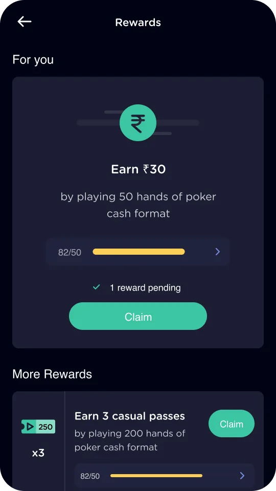
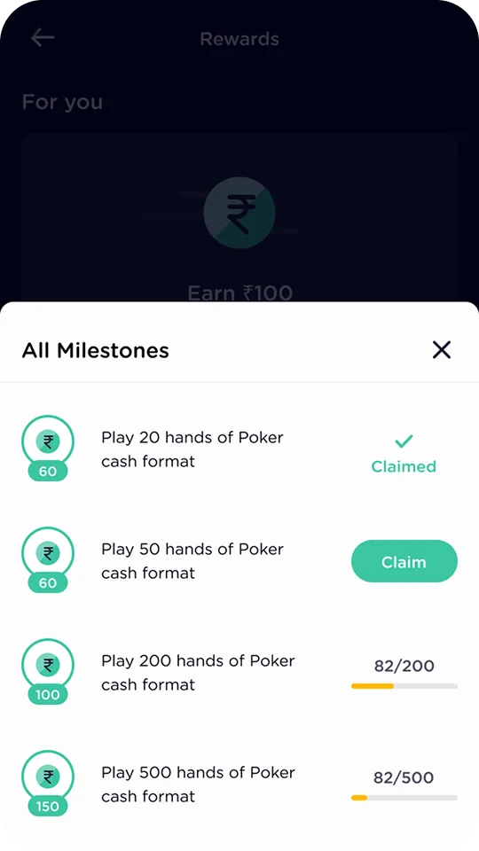
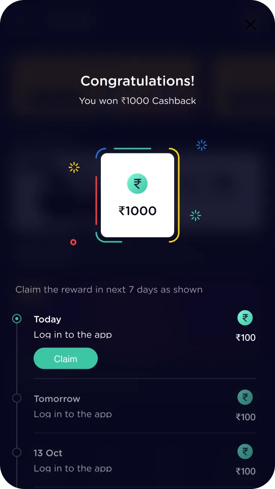

Same frame, lower stakes.
Open to full-time, founding and freelance work
I design the screens people trust with their money, their scores and their data. I chose interaction design because it sits where psychology meets technology, and lately I build as well as design.

These are magnets. Move them around.Move the magnets.
The same record, read three ways. Pick the one that fits, or read all three.
Values are easy to claim. These are the moments in the case studies where each one had to earn its place.
Same frame, lower stakes.


Labels, ranking and source travel with the chart.



A task worth returning to.
Each dot is a place in the work where I did it. Point at a row, or a dot, to see where.
| Capability | KhiladiPro | Getmega | SEDP | Mega Poker | Extension |
|---|---|---|---|---|---|
| First-run onboarding | |||||
| Payments and wallets | |||||
| Every state of a component | |||||
| Data you can read and share | |||||
| Landing pages that convert | |||||
| Live game and event screens | |||||
| Retention and loyalty | |||||
| Prototypes people can hold |
Point at a row or a dot.
Every row with an arrow opens its case study.
Every sound on this site comes from this instrument. It is yours for a minute.
Sweep across it, tap a tine, or play the keys A to J and Q to U.
Off hours I go deep on whatever catches my attention. The wider your understanding of the world, the better your instincts when designing for it.